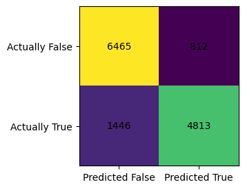
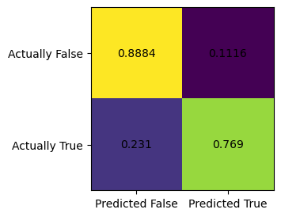

%load_ext autoreload
%autoreload 2Source
Here is a link to the source code for this blog post. ### Reference Here is a link to the main guide and reference when we write this blog post. Another reference is this paper that documents which variable means what in the PUMS data set we are going to use.
### Introduction. From the PUMS official website, we can learn all we want about the PUMS data. The American Community Survey (ACS) Public Use Microdata Sample (PUMS) files are data about individual people and housing units. There are two types of PUMS files, one for Person records and one for Housing Unit records. Each record in the Person file represents a single person. Individuals are organized into households. PUMS files for an individual year contain data on approximately one percent of the United States population.
In this blog post, we are going to focus on PUMS data on Indiana in 2018. The reason we pick Indiana is that we want to work with a state with a smallish population size, so that it would be easier to download this data using folktables to our local machine and work with it. Why not pick Illinois, one might have asked. Anyway, it’s kind of random, the author admits.
To be specific, we would like to use this data and models such as logistic regression to predict whether someone is employed or not in Indiana in 2018. Then, we would like to investigate whether the prediction given by our model is racially biased.
Implementation
After introducing the data, we would like to implement some standard machine learning model such as logitic regression from sklearn, and investigate any bias that might arise in machine learning predictions. Our main tool will be confusion matrix from sklearn.metrics.
First, let’s import some libraries that we need.
import numpy as np
import seaborn as sns
from matplotlib import pyplot as plt
from sklearn.datasets import make_blobs
import pandas as pdfrom sklearn.linear_model import LogisticRegression
from sklearn.pipeline import make_pipeline
from sklearn.preprocessing import StandardScaler
from sklearn.metrics import confusion_matrix
from sklearn.model_selection import train_test_split
from sklearn.tree import DecisionTreeClassifier
from sklearn.model_selection import cross_val_score
from sklearn.metrics import classification_report
from sklearn.preprocessing import PolynomialFeatures
from sklearn.pipeline import Pipeline
import warningsGetting the data using folktables
The first thing we do is download the PUMS data for Indiana in 2018 using folktables. This allows us to conveniently write a few lines of code and pull the data set from the internet without firing up a browser. After getting the data, we store the data in the variable acs_data, and let us take a look at the dataframe using .head() function.
from folktables import ACSDataSource, ACSEmployment, BasicProblem, adult_filter
STATE = "IN"
data_source = ACSDataSource(survey_year='2018',
horizon='1-Year',
survey='person')
acs_data = data_source.get_data(states=[STATE], download=True)acs_data.head(3)| RT | SERIALNO | DIVISION | SPORDER | PUMA | REGION | ST | ADJINC | PWGTP | AGEP | ... | PWGTP71 | PWGTP72 | PWGTP73 | PWGTP74 | PWGTP75 | PWGTP76 | PWGTP77 | PWGTP78 | PWGTP79 | PWGTP80 | |
|---|---|---|---|---|---|---|---|---|---|---|---|---|---|---|---|---|---|---|---|---|---|
| 0 | P | 2018GQ0000042 | 3 | 1 | 2000 | 2 | 18 | 1013097 | 46 | 20 | ... | 7 | 6 | 82 | 44 | 6 | 76 | 83 | 44 | 45 | 44 |
| 1 | P | 2018GQ0000053 | 3 | 1 | 2306 | 2 | 18 | 1013097 | 19 | 48 | ... | 16 | 19 | 37 | 23 | 2 | 19 | 2 | 2 | 40 | 18 |
| 2 | P | 2018GQ0000074 | 3 | 1 | 2000 | 2 | 18 | 1013097 | 88 | 20 | ... | 166 | 158 | 160 | 90 | 87 | 84 | 88 | 90 | 13 | 166 |
3 rows × 286 columns
We see that we have \(286\) columns, which is more than what we need! Later in the code, we’ll select a dozen columns that we need and stick to working with those. However, before jumping into fitting the model, let us first recall how logistic regression works on a high level and what does each column in our data represent.
Data wrangling, applying Logistic Regression
We recall the equation for a linear regression first: \[ y = \beta_0 + \beta_1 X_1 + \beta_2 X_2 + \cdots + \beta_n X_n, \] where, \(\beta_i\)’s are coefficients, \(y\) is the depedent variable, and the \(X_i\)’s are regressors (independent variables). Now, we recall logistic function (or sigmoid function), which is \[ f(x) = \frac{1}{1+e^{-x}}, \] and when we put those two piece together, we obtain the formula for logistic regression: \[ y = \frac{1}{1+e^{\beta_0 + \beta_1 X_1 + \beta_2 X_2 + \cdots + \beta_n X_n}}, \]
Here are the columns/variables that are important for our analysis: * PINCP is total personal income. * ESR is employment status coded as a dummy variable (1 if employed, 0 if not) * SEX is binary sex, coded 1 for male, and 2 for female. * RAC1P is race (1for White Alone, 2 for Black/African American alone, 3 and above for other self-identified racial groups) * DEAR, DEYE, and DERM refers to disability status relating to ear, eye, etc. * AGEP is Age, represented as integers. * SCHL is educational attainment, coded as integers. * MAR is Marital status, coded using integers. * RELP is Relationship. * COW is class of worker, coded using integers. * OCCP is occupation. * POBP is place of birth. * WKHP is usual hours worked per week in the past 12 months.
Since we will devide the data set into racial groups and take a look at racial bias, let’s record the encoding of this categorial variable RAC1P here for easy reference. * \(1\): White alone * \(2\): Black or African American alone * \(3\): American Indian alone * \(4\): Alaska Native alone * \(5\): American Indian and Alaska Native tribes specified, or American Indian or Alaska Native * \(6\): Asian alone * \(7\): Native Hawaiian and Other Pacific Islander alone * \(8\): Some Other Race alone * \(9\): Two or More Races
We would like to work on the following tasks:
my_features=['PINCP', 'ESR', 'AGEP', 'SCHL', 'MAR', 'RELP', 'DIS', 'ESP', 'CIT', 'MIG', 'MIL', 'ANC', 'NATIVITY', 'DEAR', 'DEYE', 'DREM', 'SEX', 'RAC1P']
# new_df = acs_data[my_features]
# new_df['INCOME'] = np.where(new_df['PINCP'] >= 70000, 1, 0)
# new_df.loc[new_df['PINCP'] >= 70000]
# new_df.loc[new_df['ESR'] == 1]Now we form the list features_to_use, where we exclude ESR, since that is employment status, which is something we want to predict, and also RAC1P, which is categorial variable coded in integers for race, and we would like to single this out for the group variable in the later code blocks.
features_to_use = [f for f in my_features if f not in ["ESR", "RAC1P"]]print(features_to_use)['PINCP', 'AGEP', 'SCHL', 'MAR', 'RELP', 'DIS', 'ESP', 'CIT', 'MIG', 'MIL', 'ANC', 'NATIVITY', 'DEAR', 'DEYE', 'DREM', 'SEX']EmploymentProblem = BasicProblem(
features=features_to_use,
target='ESR',
target_transform=lambda x: x == 1,
group='RAC1P',
# group='SEX',
preprocess=lambda x: x,
postprocess=lambda x: np.nan_to_num(x, -1),
)
features, label, group = EmploymentProblem.df_to_numpy(acs_data)Now we could form our training data and testing data.
X_train, X_test, y_train, y_test, group_train, group_test = train_test_split(
features, label, group, test_size=0.2, random_state=0)Working with pd.DataFrame, apply logistic regression in Python with scikit-learn.
We see that after selecting only the columns we need, we get a smaller data set that is ready for some analysis. Let us turn our data back into a pd.DataFrame, which would enable us to use readily avaiable functions from pandas library.
df = pd.DataFrame(X_train, columns = features_to_use)
df["group"] = group_train
df["label"] = y_train
# df.loc[df['group'] == 2]
df.head(3)| PINCP | AGEP | SCHL | MAR | RELP | DIS | ESP | CIT | MIG | MIL | ANC | NATIVITY | DEAR | DEYE | DREM | SEX | group | label | |
|---|---|---|---|---|---|---|---|---|---|---|---|---|---|---|---|---|---|---|
| 0 | 0.0 | 31.0 | 20.0 | 1.0 | 1.0 | 2.0 | 0.0 | 1.0 | 1.0 | 4.0 | 4.0 | 1.0 | 2.0 | 2.0 | 2.0 | 2.0 | 1 | False |
| 1 | 32000.0 | 50.0 | 18.0 | 5.0 | 0.0 | 2.0 | 0.0 | 1.0 | 1.0 | 4.0 | 4.0 | 1.0 | 2.0 | 2.0 | 2.0 | 2.0 | 1 | True |
| 2 | 0.0 | 2.0 | 0.0 | 5.0 | 2.0 | 2.0 | 5.0 | 1.0 | 1.0 | 0.0 | 4.0 | 1.0 | 2.0 | 2.0 | 0.0 | 1.0 | 1 | False |
Basic Discriptives
Using this data frame, we first answer the following questions:
- How many individuals are in the data?
- Of these individuals, what proportion have target label equal to 1? In employment prediction, these would correspond to employed individuals.
- Of these individuals, how many are in each of the groups?
- In each group, what proportion of individuals have target label equal to 1?
- Check for intersectional trends by studying the proportion of positive target labels broken out by your chosen group labels and an additional group label. For example, if you chose race (RAC1P) as your group, then you could also choose sex (SEX) and compute the proportion of positive labels by both race and sex. This might be a good opportunity to use a visualization such as a bar chart, e.g. via the seaborn package.
First, let us try to compute these values without the help of groupby().
print(f"The Number of Rows is: {df.shape[0]}")
print(f"The Number of Columns is: {df.shape[1]}")
print(f"The Number of individual who are employed is: {df.loc[df['label'] == True].shape[0]}")
print(f"The Percentage of individuals who are employed is: {24858/54144}")
###
print(f"The Number of person who identify as black is: {df.loc[df['group']==2].shape[0]}")
print(f"The Number of person who identify as white is: {df.loc[df['group']==1].shape[0]}")
print(f"The Number of person who identify as black and is currently employed: {df.loc[(df['group']==2) & (df['label']==True)].shape[0]}")
print(f"The Number of person who identify as white and is currently employed: {df.loc[(df['group']==1) & (df['label']==True)].shape[0]}")
###
print(f"The Number of person who identify as other racial groups is: {df.loc[df['group']>= 3].shape[0]}")
print(f"The Number of person who identify as other racial groups and is currently employed: {df.loc[(df['group']>= 3) & (df['label']==True)].shape[0]}")
###
print(f"The Percentage of person who identify as black and is also employed is: {1374/3626}")
print(f"The Percentage of person who identify as white and is also employed is: {22200/47332}")
print(f"The Percentage of person who identify as other racial groups and is also employed is: {1284/3186}")The Number of Rows is: 54144
The Number of Columns is: 18
The Number of individual who are employed is: 24858
The Percentage of individuals who are employed is: 0.4591090425531915
The Number of person who identify as black is: 3626
The Number of person who identify as white is: 47332
The Number of person who identify as black and is currently employed: 1374
The Number of person who identify as white and is currently employed: 22200
The Number of person who identify as other racial groups is: 3186
The Number of person who identify as other racial groups and is currently employed: 1284
The Percentage of person who identify as black and is also employed is: 0.3789299503585218
The Percentage of person who identify as white and is also employed is: 0.4690272965435646
The Percentage of person who identify as other racial groups and is also employed is: 0.4030131826741996We see that this is not the most efficient way to compute these values. Hence, let us use groupby() and other similar functions that will make our life much easier.
print( df.groupby("SEX").size() )SEX
1.0 26578
2.0 27566
dtype: int64We observe that there are \(26578\) males and \(27566\) females in the data set. Using the .groupby function, we see that we can more efficiently obtain the information we needed than the methods demonstrated in the above cell blocks.
print( df.groupby("group").size() )group
1 47332
2 3626
3 83
4 1
5 29
6 942
7 17
8 906
9 1208
dtype: int64Since group 1 denotes white individuals, and group 2 denotes black individuals, we could read off of the previous block of code that there are \(47332\) white individuals and \(3636\) black individuals in Indiana in 2018.
print(df.groupby("label").size())label
False 29286
True 24858
dtype: int64We see that in Indiana in 2018, there’s \(29286\) persons who are unemployed, and there’s \(24858\) persons who are employed. Again, using .groupby is much more efficient than what we did previously. The total number of persons in the data set is \(54144.\) The (average) percentage of individuals who are employed is about \(46\) percent.
print(df.groupby(['group', 'label']).size())
print("the average employment rate (of all people in all groups, in Indiana, in 2018) is: " , df["label"].mean())group label
1 False 25132
True 22200
2 False 2252
True 1374
3 False 50
True 33
4 True 1
5 False 17
True 12
6 False 492
True 450
7 False 6
True 11
8 False 516
True 390
9 False 821
True 387
dtype: int64
the average employment rate (of all people in all groups, in Indiana, in 2018) is: 0.4591090425531915We see that in group 1, for white individuals in Indiana, in 2018, the number of unemployed individual is \(25132\), and the number of employed individual is \(22200\). Similarly, for black individuals in Indiana, in 2018, the number of unemployed individual is \(2252\), and the number of employed individual is \(1374\). However, it might be more clear to see the employment rate for better comparison. The following line of code shows the employment rate for each group. The employment rate for white individual in IN in 2018 is \(47\) percent. The employment for black individual in IN in 2018 is \(37.9\) percent. Hence, we see that the employment rate is higher for a white individual than a black individual statistically. Also, we see that there is only one person in group 4, which is Alaska Native. Since there is only one person in this group, we should not be too surprised if we see that the employment rate for this group is \(100\) percent, since this just means this one person is employed.
print( df.groupby("group")["label"].mean() )group
1 0.469027
2 0.378930
3 0.397590
4 1.000000
5 0.413793
6 0.477707
7 0.647059
8 0.430464
9 0.320364
Name: label, dtype: float64More efficiently, we could use the following line of code and read off the employment rate for persons based on their race and gender binary. We see that for people identifying as white male, the employment rate is \(50.7\) percent. For people identifying as white female, the employment rate is \(43.2\) percent. Similarly, we see that for people identifying as black male, the employment rate is \(35.7\) percent. For people identifying as black female, the employment rate is \(40\) percent.
df.groupby(["group","SEX"])["label"].mean()group SEX
1 1.0 0.507493
2.0 0.431978
2 1.0 0.357579
2.0 0.400000
3 1.0 0.348837
2.0 0.450000
4 2.0 1.000000
5 1.0 0.352941
2.0 0.500000
6 1.0 0.510067
2.0 0.448485
7 1.0 0.666667
2.0 0.625000
8 1.0 0.475877
2.0 0.384444
9 1.0 0.312178
2.0 0.328000
Name: label, dtype: float64The below graph shows the number of female in each racial group and male in each racial group for the PUMS data of Indiana in 2018. Recall that group 1, shown in blue here, denotes white individuals, and group 2, shown in orange here, denotes black individuals. The rest of the groups denotes several other racial groups, and the detailed encoding could be accessed on PUMS website. The main takaway here is that the population in Indiana in 2018 is predominantly white.
counts = df.groupby(["group", "SEX"]).size().reset_index(name = "n")
sns.barplot(data = counts, x = "SEX", y = "n", hue = "group").set(title="Bar Plot of number of female and male in each racial group")[Text(0.5, 1.0, 'Bar Plot of number of female and male in each racial group')]
In the following cell, we show a bar graph of average employment rate for individuals in different racial and gender binary categories. We should ignore group 4, which is Alaska Native, since previously, as we are tallying the number of individuals in each racial group, we see that there is only one person in group 4, and that person is also recorded as employed, so group 4 female has a employment rate of \(100\) percent is because there’s only one person who is also employed.
percentages = df.groupby(["group", "SEX"])["label"].mean().reset_index()
sns.barplot(data = percentages, x = "SEX", y = "label", hue = "group").set(title="Bar Plot of average employment rate for female and male individuals in each racial categories")[Text(0.5, 1.0, 'Bar Plot of average employment rate for female and male individuals in each racial categories')]
Moving on to fitting models
fit a logistic regression model
After consideration, we decide to go with logistic regression. We build our model, and we fit our model on our training data, which is stored in variable X_train, and y_train.
# model = make_pipeline(StandardScaler(), LogisticRegression())
model = LogisticRegression(solver='liblinear', random_state=0)
model.fit(X_train, y_train)LogisticRegression(random_state=0, solver='liblinear')In a Jupyter environment, please rerun this cell to show the HTML representation or trust the notebook.
On GitHub, the HTML representation is unable to render, please try loading this page with nbviewer.org.
LogisticRegression(random_state=0, solver='liblinear')
train_score = model.score(X_train,y_train)
test_score = model.score(X_test,y_test)
print(f"The overall training score is: {round(train_score,3)} for logistic regression with solver equal to liblinear")
print(f"The overall testing score is: {round(test_score, 3)} for logistic regression with solver equal to liblinear")The overall training score is: 0.84 for logistic regression with solver equal to liblinear
The overall testing score is: 0.833 for logistic regression with solver equal to liblineary_hat = model.predict(X_test)
print(f" The overall testing accuracy in predicting whether someone is employed in 2018 in Indiana is: {(y_hat == y_test).mean()}", "\n",
f" The accuracy for white individuals is {(y_hat == y_test)[group_test == 1].mean()}", "\n",
f" The accuracy for black individuals is {(y_hat == y_test)[group_test == 2].mean()}")
print(f" Classification Report:\n{classification_report(y_test, y_hat)}") The overall testing accuracy in predicting whether someone is employed in 2018 in Indiana is: 0.8331855791962175
The accuracy for white individuals is 0.8338424983027835
The accuracy for black individuals is 0.8265086206896551
Classification Report:
precision recall f1-score support
False 0.82 0.89 0.85 7277
True 0.86 0.77 0.81 6259
accuracy 0.83 13536
macro avg 0.84 0.83 0.83 13536
weighted avg 0.83 0.83 0.83 13536
Cross Validation for Logistic Regression
# cross validation
cv_scores = cross_val_score(model, X_train, y_train, cv=5)
print(f"the cross validation scores are: {cv_scores}")
cv_average = cv_scores.mean()
print(f"the average score for cross validation is: {round(cv_average,3)}")the cross validation scores are: [0.83876628 0.83876628 0.83830455 0.84246006 0.8405061 ]
the average score for cross validation is: 0.84Logistic Regression with Polynomial Features
plr = PolynomialFeatures(degree=2, include_bias=False)
poly_feature = plr.fit_transform(X_train)By using fit_transform(), we have fitted and transformed our traing data X_train. We also created the square of the numbers, since we have set the degree to \(2\). We could print out the shapes of poly_feature and X_train for comparison.
print(poly_feature.shape, X_train.shape)(54144, 152) (54144, 16)LR_poly = LogisticRegression()
LR_poly.fit(poly_feature, y_train)LogisticRegression()In a Jupyter environment, please rerun this cell to show the HTML representation or trust the notebook.
On GitHub, the HTML representation is unable to render, please try loading this page with nbviewer.org.
LogisticRegression()
print(f"The training score is: {LR_poly.score(poly_feature, y_train)}")
y_hat_poly = LR_poly.predict(poly_feature)
score = (y_hat_poly == y_train).mean()
print(f" The overall training accuracy for polynomial features to predict whether someone is employed in 2018 in Indiana is: {round(score, 3)}")
print(f" Classification Report:\n{classification_report(y_train, y_hat_poly)}")The training score is: 0.7287603427895981
The overall training accuracy for polynomial features to predict whether someone is employed in 2018 in Indiana is: 0.729
Classification Report:
precision recall f1-score support
False 1.00 0.50 0.67 29286
True 0.63 1.00 0.77 24858
accuracy 0.73 54144
macro avg 0.81 0.75 0.72 54144
weighted avg 0.83 0.73 0.71 54144
Cross Validation for Polynomial Features Logistic Regression
# cross validation
with warnings.catch_warnings():
warnings.simplefilter("always")
warnings.filterwarnings("ignore")
cv_scores_plr = cross_val_score(LR_poly, X_train, y_train, cv=5)
print(f"\nthe cross validation scores for degree two polynomial logistic regression are: {cv_scores_plr}")
cv_average_plr = cv_scores_plr.mean()
print(f"the average score for cross validation is: {round(cv_average_plr,3)} for degree two polynomial logistic regression\n")
the cross validation scores for degree two polynomial logistic regression are: [0.83313325 0.83830455 0.82814664 0.82500693 0.83053195]
the average score for cross validation is: 0.831 for degree two polynomial logistic regression
Fit a DecisionTreeClassifier model
Now, let us fit another model.
decisiontree = DecisionTreeClassifier(max_depth=5,
splitter="best",
max_features=None,
random_state=None,
max_leaf_nodes=None,
class_weight=None)
decisiontree.fit(X_train, y_train)DecisionTreeClassifier(max_depth=5)In a Jupyter environment, please rerun this cell to show the HTML representation or trust the notebook.
On GitHub, the HTML representation is unable to render, please try loading this page with nbviewer.org.
DecisionTreeClassifier(max_depth=5)
Now we score our Decision Tree Classifier on the test sets, and we could read off the overall test score as \(0.833\).
train_score_dt = decisiontree.score(X_train,y_train)
test_score_dt = decisiontree.score(X_test,y_test)
print(f"The overall training score is: {round(train_score_dt,3)} for Decision Tree Classifier with max_depth equals 5")
print(f"The overall testing score is: {round(test_score_dt, 3)} for Decision Tree Classifier with max_depth equals 5")The overall training score is: 0.886 for Decision Tree Classifier with max_depth equals 5
The overall testing score is: 0.884 for Decision Tree Classifier with max_depth equals 5Cross Validation for Decision Tree Classifier
# cross validation
cv_scores_df = cross_val_score(decisiontree, X_train, y_train, cv=5)
print(f"the cross validation scores are: {cv_scores_df}")
cv_average_df = cv_scores_df.mean()
print(f"the average score for cross validation is: {round(cv_average_df,3)}")the cross validation scores are: [0.88170653 0.88854003 0.8847539 0.88262998 0.88520502]
the average score for cross validation is: 0.885Tuning DecisionTreeClassifier
decisiontree2 = DecisionTreeClassifier(max_depth=None,
splitter="best",
max_features=None,
random_state=None,
max_leaf_nodes=None,
class_weight=None)
decisiontree2.fit(X_train, y_train)DecisionTreeClassifier()In a Jupyter environment, please rerun this cell to show the HTML representation or trust the notebook.
On GitHub, the HTML representation is unable to render, please try loading this page with nbviewer.org.
DecisionTreeClassifier()
train_score_dt = decisiontree.score(X_train,y_train)
test_score_dt = decisiontree.score(X_test,y_test)
print(f"The overall training score is: {round(train_score_dt,3)} for Decision Tree Classifier with max_depth equals 5")
print(f"The overall testing score is: {round(test_score_dt, 3)} for Decision Tree Classifier with max_depth equals 5")
# cross validation
cv_scores_df = cross_val_score(decisiontree, X_train, y_train, cv=5)
print(f"the cross validation scores are: {cv_scores_df}")
cv_average_df = cv_scores_df.mean()
print(f"the average score for cross validation is: {round(cv_average_df,3)}")The overall training score is: 0.886 for Decision Tree Classifier with max_depth equals 5
The overall testing score is: 0.884 for Decision Tree Classifier with max_depth equals 5
the cross validation scores are: [0.88170653 0.88854003 0.8847539 0.88262998 0.88520502]
the average score for cross validation is: 0.885Audit the model
We seek to answer the following questions using the Logistic Regression model we fitted earlier. We will only focus on testing data.
Overall Measures
- What is the overall accuracy of your model?
- What is the positive predictive value (PPV) of your model?
- What are the overall false negative and false positive rates (FNR and FPR) for your model? ### By-Group Measures
- What is the accuracy of your model on each subgroup?
- What is the PPV of your model on each subgroup?
- What are the FNR and FPR on each subgroup? ### Bias Measures
- See Chouldechova (2017) for definitions of these terms. For calibration, you can think of the score as having only two values, 0 and 1.
- Is your model approximately calibrated?
- Does your model satisfy approximate error rate balance?
- Does your model satisfy statistical parity?
for obj in [features, label, group]:
print(obj.shape)(67680, 16)
(67680,)
(67680,)print(model.score(X_test,y_test))0.8331855791962175Hence, the score for logistic regression is \(8.33\), which is not bad!
my_matr = confusion_matrix(y_test, model.predict(X_test))
print(f"confusion matrix is:\n{my_matr}")confusion matrix is:
[[6465 812]
[1446 4813]]The positive predictive value (PPV) is obtained by using this formula: \[PPV = \frac{TP}{TP+FP},\] where \(TP\) denotes True Positive, and \(FP\) denotes True Negative. Hence, we need the value from lower-right corner (TP) of the confusion matrix divided by the value from lower right corner (TP) plus upper-right corner (FP).
print(f"The positive predictive value for logistic regression is {round(4813/(4813+812), 3)}")The positive predictive value for logistic regression is 0.856Recall that: * upper-left corner is TN, which stands for True negative * lower-left corner is FN, False negative * upper-right corner is FP, which stands for False positive * lower-right corner is TP, True positive
\[ \begin{bmatrix} TN & FP\\ FN & TP\\ \end{bmatrix} \]
We also care about the FPR, which stands for the false positive rate, which is top-right corner of the confusion matrix (after we normalize). FNR is false negative rate.
my_matr = confusion_matrix(y_test, model.predict(X_test), normalize="true")
print(f"Normalized confusion matrix is:\n{my_matr}")Normalized confusion matrix is:
[[0.88841556 0.11158444]
[0.23102732 0.76897268]]FPR is \(0.111\), FNR is \(0.231\). We see that FNR is twice the amount of FPR, which means this model is twice as likely to produce False negative as it is to produce false positive. In plain english, this model is twice as likely to predict someone not have a job while that person actually have a job, than the other way round. ### Plot the confusion matrix in colors
my_matr = confusion_matrix(y_test, model.predict(X_test))
fig, ax = plt.subplots(figsize=(3,3))
ax.imshow(my_matr)
ax.xaxis.set(ticks=(0,1), ticklabels=('Predicted False', 'Predicted True'))
ax.yaxis.set(ticks=(0,1), ticklabels=('Actually False', 'Actually True'))
ax.set_ylim(1.5, -0.5)
for i in range(2):
for j in range(2):
ax.text(j,i, my_matr[i,j], ha='center', va='center', color='black')
my_matr = confusion_matrix(y_test, model.predict(X_test), normalize="true")
fig, ax = plt.subplots(figsize=(3,3))
ax.imshow(my_matr)
ax.xaxis.set(ticks=(0,1), ticklabels=('Predicted False', 'Predicted True'))
ax.yaxis.set(ticks=(0,1), ticklabels=('Actually False', 'Actually True'))
ax.set_ylim(1.5, -0.5)
for i in range(2):
for j in range(2):
ax.text(j,i, my_matr[i,j].round(4), ha='center', va='center', color='black')
By-group measures
df_test = pd.DataFrame(X_test, columns = features_to_use)
df_test["group"] = group_test
df_test["label"] = y_test
# df.loc[df['group'] == 2]
df_test.head(3)| PINCP | AGEP | SCHL | MAR | RELP | DIS | ESP | CIT | MIG | MIL | ANC | NATIVITY | DEAR | DEYE | DREM | SEX | group | label | |
|---|---|---|---|---|---|---|---|---|---|---|---|---|---|---|---|---|---|---|
| 0 | 12000.0 | 59.0 | 17.0 | 3.0 | 10.0 | 2.0 | 0.0 | 1.0 | 1.0 | 4.0 | 3.0 | 1.0 | 2.0 | 2.0 | 2.0 | 2.0 | 1 | False |
| 1 | 369000.0 | 57.0 | 16.0 | 1.0 | 0.0 | 2.0 | 0.0 | 1.0 | 1.0 | 4.0 | 1.0 | 1.0 | 2.0 | 2.0 | 2.0 | 1.0 | 1 | True |
| 2 | 34000.0 | 27.0 | 19.0 | 1.0 | 0.0 | 2.0 | 0.0 | 1.0 | 1.0 | 4.0 | 1.0 | 1.0 | 2.0 | 2.0 | 2.0 | 2.0 | 1 | True |
y_hat=model.predict(X_test)
print(f" The accuracy for white individuals is {(y_hat == y_test)[group_test == 1].mean()}", "\n",
f" The accuracy for black individuals is {(y_hat == y_test)[group_test == 2].mean()}") The accuracy for white individuals is 0.8338424983027835
The accuracy for black individuals is 0.8265086206896551black_indicator = df_test["group"]==2
white_indicator = df_test["group"]==1
y_test_black = df_test["label"][black_indicator]
X_test_black = df_test.drop(["group","label"], axis=1)[black_indicator]
y_test_white = df_test["label"][white_indicator]
X_test_white = df_test.drop(["group","label"], axis=1)[white_indicator]
with warnings.catch_warnings():
warnings.simplefilter("always")
warnings.filterwarnings("ignore")
y_hat_black = model.predict(X_test_black)
my_matr = confusion_matrix(y_test_black, y_hat_black)
print(f"confusion matrix when we restrict to black individual is:\n{my_matr}")
y_hat_white = model.predict(X_test_white)
my_matr = confusion_matrix(y_test_white, y_hat_white)
print(f"confusion matrix when we restrict to white individual is:\n{my_matr}")
y_hat_black = model.predict(X_test_black)
my_matr = confusion_matrix(y_test_black, y_hat_black, normalize="true")
print(f"normalized confusion matrix when we restrict to black individual is:\n{my_matr}")
y_hat_white = model.predict(X_test_white)
my_matr = confusion_matrix(y_test_white, y_hat_white, normalize="true")
print(f"normalized confusion matrix when we restrict to white individual is:\n{my_matr}")confusion matrix when we restrict to black individual is:
[[513 48]
[113 254]]
confusion matrix when we restrict to white individual is:
[[5519 719]
[1239 4307]]
normalized confusion matrix when we restrict to black individual is:
[[0.9144385 0.0855615 ]
[0.30790191 0.69209809]]
normalized confusion matrix when we restrict to white individual is:
[[0.8847387 0.1152613 ]
[0.22340426 0.77659574]]Recall that: \[ \begin{bmatrix} TN & FP\\ FN & TP\\ \end{bmatrix} \]
We also care about the FPR, which stands for the false positive rate, which is top-right corner of the confusion matrix (after we normalize). FNR is false negative rate. We see that the FPR when we restrict to black individual is \(0.0855\), and the FNR is \(0.308\). We see that the model is very unlikely to predict a black individual have a job when they are not actually employed since FPR is so low. On the other hand, the FNR is quite high, the model is very likely to predict a black individual is unemployed, when they are actually employed.
By contrast, we see that FPR when we restrict to white individual is \(0.115\), and the FNR is \(0.223\). Compared to black individuals, the model has much more balanced FNR and FPR for white individuals.
X_test_pd = pd.DataFrame(X_test, columns=features_to_use)We have caliberated Logistic Regression by adding polynomial features. Just at it stands alone, the Logistic Regression we fitted has a high score, but it does not have error rate balance when we restrict to using only data from black individuals. It seems that the model is biased towards predicting black individuals as unemployed. It satisfies the statistical parity to some extent.
Concluding Discussion
It seems that this Logistic Regression model is biased towards predicting black individuals as unemployed, since this model is roughly \(4\) times as likely to predict a black individual as unemployed when they actually have a job, than the other way round. Even for white individuals, this model is twice as likely to predict a person as unemployed when they actually have a job. Hence, this model predicts more unemployment, which could be of interest to banks, corporations who want interest rate (such as Federal Funds rate) to be low. In a very simplified account, the Fed has two jobs, combat inflation and unemployment. There’s often a trade off between those two goals, since if the Fed set Federal Funds rate low, then there’s more growth and employment in the economy, but also there’s rising inflation. Hence, if companies could use this model to make unemployment looks worse than it actually is, they could lobby the government adopt growth-promoting policies and ask for low interest rates, so this could potentially worsen inflation, if inflation is actually a bigger problem than unemployment.
Hence, the Logistic Regression model we fitted is a bit biased.